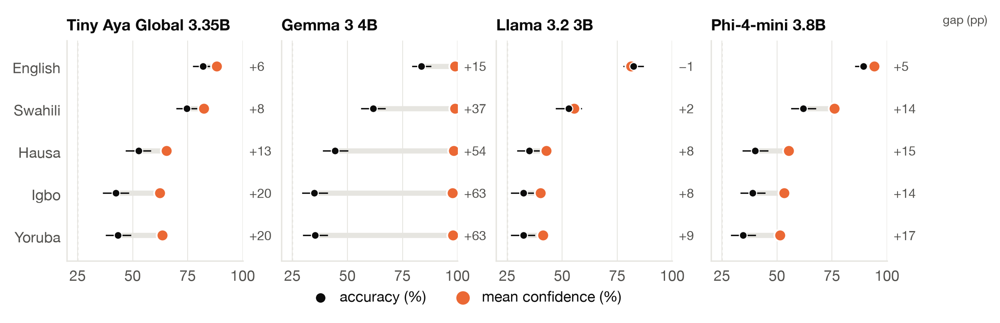
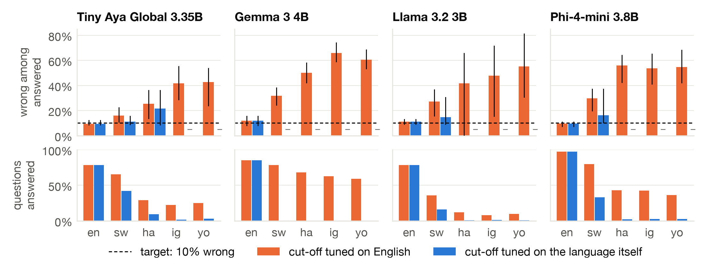
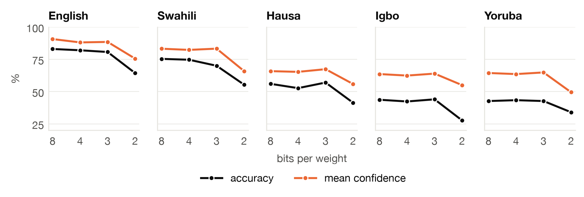
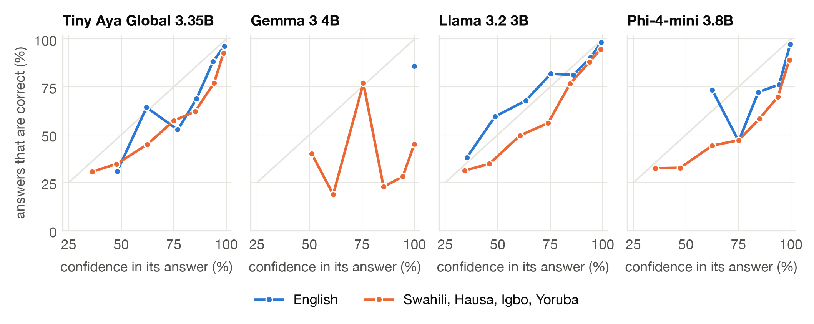

With
Apart Research
Abstract
People who use AI models in languages with little text online have few ways to check an answer, so they depend on the model's own signal of how sure it is. We test whether that signal survives outside English in small models meant to run on a phone. {{Nmodels}} open models of 3 to 4 billion parameters, run as 4-bit files, answer the same {{aya-q4.n}} reading-comprehension questions in English, Swahili, Hausa, Igbo and Yoruba. Accuracy falls from {{R:acc:en}} in English to {{R:acc:ig,yo}} in Igbo and Yoruba. Average confidence differs by model: Gemma 3 4B stays at {{gemma3-4b-q4.ig.conf}} in Igbo while right {{gemma3-4b-q4.ig.acc}} of the time, and Llama 3.2 3B drops almost in step with its accuracy. In every model, though, confidence becomes a poor guide to which answers are right (AUROC {{R:auroc:en}} in English, {{R:auroc:ig,yo}} in Igbo and Yoruba). A cut-off tuned to allow 10% wrong answers in English lets through {{R:cf_en_err:ig,yo}} in Igbo and Yoruba, and one tuned on those languages answers almost nothing. Asked how sure they are, the models return nearly the same number for every answer in a language. Comparing a model with itself works better: answers that match its answer to the English version of the question are right {{R:acc_agree:af}} of the time, against {{R:acc_disagree:af}} for those that differ. Taking Tiny Aya from 8 bits down to 3 changes little; at 2 bits its accuracy falls in every language. Confidence safeguards validated in English should not be assumed to hold in other languages.
1 Research conducted at the AI x Epistemics Research Sprint, November 2026
Someone who asks an AI model a question needs two things back: an answer, and some sense of how far to trust it. The second matters most when the answer is hard to check elsewhere. That is the position of many speakers of African languages. There is little text online in Hausa, Igbo or Yoruba to check an answer against, and the models now being built for these languages are small ones meant to run offline on a phone (Salamanca et al., 2026). If such a model is as sure of its wrong answers as of its right ones, its users cannot tell when to doubt it, and a safeguard that hides low-confidence answers protects no one. Whether AI improves or damages what people know depends in part on signals like this one (Finnveden, 2024).
Confidence in language models has mostly been studied in English and in large models. We ask a narrow, practical question: when the same question is put in English and in Swahili, Hausa, Igbo or Yoruba, does a phone-sized model's confidence still separate its right answers from its wrong ones? We test {{nmodels}} open models of 3 to 4 billion parameters, in the 4-bit files people actually run, on {{aya-q4.n}} reading-comprehension questions that human translators wrote in all five languages (Belebele; Bandarkar et al., 2024). Since the questions are identical, a difference between languages comes from the model.
We find that it does not. Accuracy falls from {{R:acc:en}} in English to {{R:acc:ig,yo}} in Igbo and Yoruba. How sure the models are on average then depends on the model: Gemma 3 4B stays {{gemma3-4b-q4.ig.conf}} confident on Igbo questions it gets right {{gemma3-4b-q4.ig.acc}} of the time, while Llama 3.2 3B lowers its confidence almost in step with its accuracy. But in no model does confidence still reliably pick out the right answers. A cut-off tuned on English therefore lets through several times the errors it was tuned to allow, and asking the models how sure they are returns nearly the same number for every answer in a language. Comparing a model with its own answer to the English version of the question works far better.
Our main contributions are:
Reading confidence out of a model. Guo et al. (2017) showed that modern networks are often more confident than accurate and that one temperature fitted on held-out data repairs much of it. For language models, confidence is usually read as the probability of the chosen answer, a yes/no self-check on the model's own answer (Kadavath et al., 2022), or a number the model states (Tian et al., 2023; Xiong et al., 2024). We measure all three on the same answers. Answering only above a confidence cut-off (Geifman and El-Yaniv, 2017) is how an assistant would use these numbers, and Kalai et al. (2025) argue that models guess instead of abstaining partly because evaluations reward guessing.
Across languages. Ahuja et al. (2022) found multilingual encoders poorly calibrated outside English, most of all in low-resource languages. For generative models, Zhou et al. (2025) report on Belebele and MMMLU that calibration error outside English is several times the English one for 7–14B models, and Huang et al. (2026) trace part of it to instruction tuning. Alfarano et al. (2026) compare English-only and per-language abstention cut-offs in 22 languages, for one large proprietary model using stated confidence. Xue et al. (2025) and Feng et al. (2024) study multilingual confidence and abstention, and Duwal (2025) abstains when answers to machine-translated copies of a question disagree. None of these covers models meant to run on a phone, and Hausa and Igbo are missing from most of them.
Small and quantized models. The Tiny Aya paper (Salamanca et al., 2026) reports the quality cost of 8-bit and 4-bit quantization, with no confidence results and nothing below 4 bits. Proskurina et al. (2024) and Ayadi et al. (2026) study how quantization changes confidence without comparing languages, and Marchisio et al. (2024) show that it hurts output quality in some languages more than others. Multiple-choice answers also depend on option order (Zheng et al., 2024; Pezeshkpour and Hruschka, 2024), and models can answer the same question differently in different languages (Qi et al., 2023).
Questions. Belebele (Bandarkar et al., 2024) has 900 four-option reading-comprehension questions, each translated by people into 122 language variants, with the same passage, question, options and correct option in every language. We use English, Swahili, Hausa, Igbo and Yoruba and the first {{aya-q4.n}} questions of a fixed shuffle, the same ones for every model.
Models. {{Nmodels}} instruction-tuned models that fit on a phone, as 4-bit GGUF files (Q4_K_M) run with llama.cpp: Tiny Aya Global 3.35B (Salamanca et al., 2026; Cohere's official file), Gemma 3 4B (Gemma Team, 2025), Llama 3.2 3B (Meta, 2024) and Phi-4-mini 3.8B (Abouelenin et al., 2025). For Tiny Aya we also run 8-bit, 3-bit and 2-bit files made from the official 16-bit file. Each model is prompted through its own chat template. The instruction is in English for every language and only the passage, question and options change (Appendix B). Decoding is greedy.
What we record for each question and language.
Measures. Accuracy; mean confidence; the gap between them in percentage points (positive means overconfident); AUROC, the chance that a right answer gets a higher score than a wrong one (0.5 is uninformative); and expected calibration error (ECE, 10 bins). Intervals are 95% bootstrap intervals over questions. Because every language uses the same questions, differences from English are paired.
Cut-offs. A simple safeguard answers only when confidence is above a cut-off. We pick the lowest cut-off that keeps errors among answered questions at or below 10% on four fifths of the questions and score it on the remaining fifth, rotating so that every question is scored by a cut-off that never saw it. We compare a cut-off fitted on English with one fitted on the target language, and do the same for temperature scaling (Guo et al., 2017).
In English every model is accurate ({{R:acc:en}}). Outside English accuracy falls in every model, least in Swahili and most in Igbo and Yoruba, where it is {{R:acc:ig,yo}} against 25% for guessing (Figure 1, Table 1). What confidence does in response differs from model to model.

Average overconfidence outside English therefore runs from mild to extreme and is not a fixed property of small models. One thing is the same in all of them. The gap is an average, and a safeguard needs something else: confidence that separates right answers from wrong ones, which AUROC measures. In English it does ({{R:auroc:en}}). In Hausa AUROC is {{R:auroc:ha}} and in Igbo and Yoruba {{R:auroc:ig,yo}}, where 0.5 means confidence says nothing about which answers are right. Llama's average confidence is honest, yet it cannot point to the answers it got right any better than the others can.
Table 1. Accuracy, mean confidence, the gap between them and how well confidence separates right answers from wrong ones (AUROC; 0.5 means not at all). Table C1 has further measures.
{{T:main}}Suppose a developer wants at most one answered question in ten to be wrong and tunes a confidence cut-off on English, the only language they are likely to have labelled data for (Figure 2). For Tiny Aya the cut-off works in English: {{aya-q4.en.cf_en_err}} wrong among the {{aya-q4.en.cf_en_cov}} of questions it answers. The same cut-off lets through {{aya-q4.sw.cf_en_err}} wrong answers in Swahili, {{aya-q4.ha.cf_en_err}} in Hausa, {{aya-q4.ig.cf_en_err}} in Igbo and {{aya-q4.yo.cf_en_err}} in Yoruba. For Gemma it still answers {{gemma3-4b-q4.ig.cf_en_cov}} of Igbo questions, and {{gemma3-4b-q4.ig.cf_en_err}} of those answers are wrong. Llama's lower confidence makes the cut-off answer far less, {{llama32-3b-q4.ig.cf_en_cov}} of Igbo questions, but {{llama32-3b-q4.ig.cf_en_err}} of those few answers are still wrong.

Tuning the cut-off on the target language is the obvious repair, and it does not rescue the assistant. With their own cut-offs the models answer {{R:cf_own_cov:ig,yo}} of Igbo and Yoruba questions. Temperature scaling shows why (Table C2). A temperature fitted on English leaves Tiny Aya {{aya-q4.ig.gap_T_en}} points overconfident in Igbo. A temperature fitted on Igbo removes the gap ({{aya-q4.ig.gap_T_own}} points) but has to be {{aya-q4.ig.T_own}} where English needs {{aya-q4.en.T_own}}, and AUROC stays at {{aya-q4.ig.auroc_T_own}}, because rescaling cannot change the order of the answers. Calibrating each language separately makes a model honest about being unsure, which Llama already is. It does not let the model tell which of its answers are right.
Reversing the options. In English {{R:flip:en}} of answers change when the same four options are listed in reverse order; in Yoruba {{R:flip:yo}} do (Table C4). The reversal exposes a habit. In English each model's most-picked letter takes {{R:fav_share:en}} of its answers. In Yoruba Llama picks {{llama32-3b-q4.yo.fav_letter}} for {{llama32-3b-q4.yo.fav_share}} of the questions and still picks {{llama32-3b-q4.yo.fav_letter}} for {{llama32-3b-q4.yo.fav_share_rev}} after the reversal, when that letter stands for a different option; Tiny Aya does the same with {{aya-q4.yo.fav_letter}} ({{aya-q4.yo.fav_share}} and {{aya-q4.yo.fav_share_rev}}). For Tiny Aya an answer that survives the reversal is more often right than one that flips ({{aya-q4.yo.acc_stable}} against {{aya-q4.yo.acc_flipped}} in Yoruba). For the other models it makes much less difference there.
Table 2. How often an answer is right when it is the same option the model chose in English, and when it is a different one. The rule answers only if the answer is the same as in English and survives reversing the options; in brackets, the share wrong among as many answers chosen by highest confidence.
{{T:free}}Agreement with the model's own English answer is far stronger. When a model picks the same option as it picked for the English version of the question, it is right {{R:acc_agree:af}} of the time; when it picks a different one, {{R:acc_disagree:af}}. A rule that answers only when the answer is both stable and the same as in English answers {{aya-q4.yo.both_cov}} of Tiny Aya's Yoruba questions and is wrong on {{aya-q4.yo.both_err}} of them. The same number of answers chosen by highest confidence are wrong {{aya-q4.yo.conf_err_same_cov}} of the time. For Gemma in Igbo the two figures are {{gemma3-4b-q4.ig.both_err}} and {{gemma3-4b-q4.ig.conf_err_same_cov}}.
Two cautions apply. The check works because the English answers are mostly right, and with an English copy of the question in hand the English answer is itself the better one. We also used the human English version; a real assistant would have to translate the question by machine (Duwal, 2025), which would lower these numbers. The check has a second use that needs no translation at run time. The share of answers that match English is close to the accuracy in each language (for Tiny Aya {{aya-q4.sw.agree_en}}, {{aya-q4.ha.agree_en}}, {{aya-q4.ig.agree_en}} and {{aya-q4.yo.agree_en}} against accuracies of {{aya-q4.sw.acc}}, {{aya-q4.ha.acc}}, {{aya-q4.ig.acc}} and {{aya-q4.yo.acc}}; within {{X:agree_gap}} points for every model and language, Table C4), so a developer with translated questions but no answer key can estimate where a model stops being reliable.
Within a language, stated confidence is close to a constant (Table C3). Tiny Aya says "{{aya-q4.en.verbal_mode}}" for {{aya-q4.en.verbal_mode_share}} of its English answers and {{aya-q4.yo.verbal_mode_share}} of its Yoruba answers. Gemma and Phi-4-mini say "{{gemma3-4b-q4.yo.verbal_mode}}" for {{gemma3-4b-q4.yo.verbal_mode_share}} and {{phi4-mini-q4.yo.verbal_mode_share}} of their Yoruba answers. Llama does react to the language: it says "{{llama32-3b-q4.yo.verbal_mode}}" for {{llama32-3b-q4.yo.verbal_mode_share}} of its Yoruba answers, the right ones included. In no model does the stated number single out the right answers: outside English its AUROC is {{R:verbal_auroc:af}}. The yes/no self-check behaves the same way ({{R:pyes_auroc:af}}). Gemma and Phi-4-mini say their answer is correct for {{gemma3-4b-q4.ig.pyes_says_yes}} and {{phi4-mini-q4.ig.pyes_says_yes}} of their Igbo answers, and for {{gemma3-4b-q4.ig.pyes_yes_when_wrong}} and {{phi4-mini-q4.ig.pyes_yes_when_wrong}} of the wrong ones; Llama says so for {{llama32-3b-q4.ig.pyes_says_yes}}. In this simple form, asking a small model about its own answer tells the user little about that answer.
Figure 3 follows Tiny Aya from 8 bits down to 2 (Table C5). Down to 3 bits little changes: in Yoruba accuracy is {{aya-q8.yo.acc}} at 8 bits, {{aya-q4.yo.acc}} at 4 and {{aya-q3.yo.acc}} at 3, and the gap is {{aya-q8.yo.gap}}, {{aya-q4.yo.gap}} and {{aya-q3.yo.gap}} points. At 2 bits accuracy falls in every language, English included ({{aya-q4.en.acc}} to {{aya-q2.en.acc}}), and answers become unstable: {{aya-q2.ig.flip}} of Igbo answers flip when the options are reversed, against {{aya-q4.ig.flip}} at 4 bits. Confidence falls as well, so the gap moves much less than accuracy does ({{RQ2:gap:all}} points at 2 bits against {{RQ4:gap:all}} at 4). On this task the change of language costs more than the loss of bits. At 4 bits Tiny Aya loses {{D:aya-q4.en.acc:aya-q4.yo.acc}} points of accuracy between English and Yoruba; going from 4 bits to 2 costs it {{D:aya-q4.en.acc:aya-q2.en.acc}} points in English. The confidence problem of Sections 4.1 to 4.3 is present at every precision, including the 8-bit file that is close to the unquantized model, so quantization neither causes it nor, down to 3 bits, makes it worse.

For someone building an assistant. A model that has been checked in English has not been checked. Every safeguard we tried that reads the model's own confidence would normally be tuned on English, and each one failed in the languages where the model is weakest. Tuning in each language needs labelled questions that seldom exist, and in Igbo and Yoruba it produced an assistant that declines almost everything. The cheaper route is to stop asking the model how sure it is and test whether its answer holds still: ask again with the options in another order, and ask again in English.
For the person asking. A fluent, assured answer in Yoruba is weaker evidence than the same answer in English, and nothing on the screen says so. People learn how far to trust a tool by using it. Someone who first tries a model in English and then uses it in their other language carries over a trust the model has not earned there.
For evaluation. Accuracy by language is now commonly reported. We suggest two numbers beside it: how often high-confidence answers are wrong, and AUROC. Llama 3.2 shows why the second is needed. Its average confidence is close to honest in every language, which a calibration score rewards, and it is no better than Gemma at picking out its right answers. Tiny Aya, the one model of the four built for broad multilingual coverage, is the most accurate of the four in Hausa, Igbo and Yoruba, and its confidence is the most informative there (AUROC {{aya-q4.ha.auroc}}, {{aya-q4.ig.auroc}} and {{aya-q4.yo.auroc}}), though still far below its English level.
Limitations. The study covers one kind of task (four-option reading comprehension), {{aya-q4.n}} questions, {{nmodels}} models and one prompt with English instructions, so the sizes of the effects should not be carried over to open-ended use without testing. Confidence is read from the first generated token, and the agreement check used human translations, which a real system would not have. We measured behaviour and did not test why it happens. Appendix A gives the full list.
Future work. The next steps are the same measurements on open-ended questions with instructions in the target language, the agreement check with machine translation in the loop, and a test of whether training a model to abstain across languages (Feng et al., 2024) repairs the ranking of answers and not only the average.
{{Nmodels}} phone-sized models answered the same questions in five languages. In English their confidence was a usable guide to their accuracy. In Hausa, Igbo and Yoruba it was not: one model stayed almost certain while wrong two times in three, another lowered its confidence in step with its accuracy, and none could reliably tell its right answers from its wrong ones. A safeguard tuned on English let through several times the errors it was tuned to allow, and checking an answer against the model's own answer in English was a better guide than any confidence number. For speakers of these languages, a model checked only in English has not been checked.
What was built during the sprint. All code for this study (build_items.py, run_eval.py, analyze.py), every run and all analysis were done during the sprint. Reused from outside this project: the llama.cpp build and the Tiny Aya GGUF files (Cohere's official 4-bit files of Tiny Aya Global and Tiny Aya Earth, the official 16-bit file, and the 3-bit and 2-bit files quantized from it), which were already on the same machine for a separate safety project by the author. The 8-bit file was made from the 16-bit file for this study. No code or results from that project are used here.
The study uses public models and a public benchmark, involves no human subjects and no personal data, and releases nothing that makes a model more capable. We see three ways the results could be misused or misread.
The findings are not a security vulnerability and need no coordinated disclosure. The code and every raw model output {{released}} so the numbers can be checked.
Answer prompt (user turn). The letters stay A–D when the options are reversed.
Read the passage and answer the question. Reply with only the letter (A, B, C or D) of the correct answer.
Passage: {passage}
Question: {question}
A. {option 1}
B. {option 2}
C. {option 3}
D. {option 4}
Answer:
Stated confidence (second user turn, after the model's own letter as the assistant turn):
What is the probability, from 0 to 100, that the answer you just gave is correct? Reply with only the number.
Yes/no self-check (second user turn, same setup):
Is the answer you just gave correct? Reply with only Yes or No.
Table C1. Further measures for the four main models. The share of answers given with at least 90% confidence is followed by the share of those that are wrong. "Accuracy with options reversed" is accuracy when the four options are listed in reverse order. "First-token probability on A–D" is the share of the first token's probability that fell on the four letters before renormalising.
{{T:detail}}Table C2. Cut-offs and temperatures in full. A cut-off is the lowest confidence that keeps errors among answered questions at or below 10% on the fitting questions; all numbers are scored on questions the cut-off or temperature was not fitted on. T is the temperature: ECE is shown raw, after a temperature fitted on English and after one fitted on the language itself ("own T"). T was searched between 0.1 and 50; stored probabilities are rounded to five decimals, which limits how far a nearly certain answer can be softened.
{{T:cut}}Table C3. What the models say about their own answers. The yes/no rows count an answer as "Yes" when the probability of Yes is above that of No.
{{T:say}}Table C4. More on the checks of Section 4.3. AUROC of agreement treats "same answer as in English" as a yes/no score for correctness. The rule answers only when the answer is the same as in English and survives reversing the options. Top letter is the letter the model picks most often, with its share of answers before and after the options are reversed.
{{T:free_more}}Table C5. Tiny Aya Global at four precisions. The 4-bit file is Cohere's official one; the others were made from the official 16-bit file with llama-quantize.
{{T:quant}}Table C6. Tiny Aya Earth, one of the regional variants of Tiny Aya (Salamanca et al., 2026), next to Tiny Aya Global. Both are Cohere's official 4-bit files, on the same questions.
{{T:extra}}
I used Claude, through Claude Code, heavily in this project. I chose the project and its scope and ran all the experiments on my own laptop. Claude wrote the evaluation and analysis code, helped find and check the related work, and drafted the report, which I reviewed before submission. The figures and numerical results were generated from the experiment data using the project scripts. I take responsibility for the content of this report.